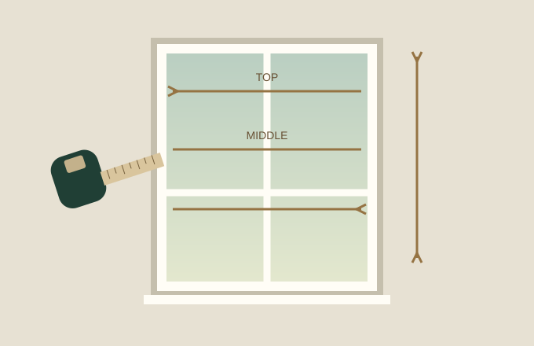
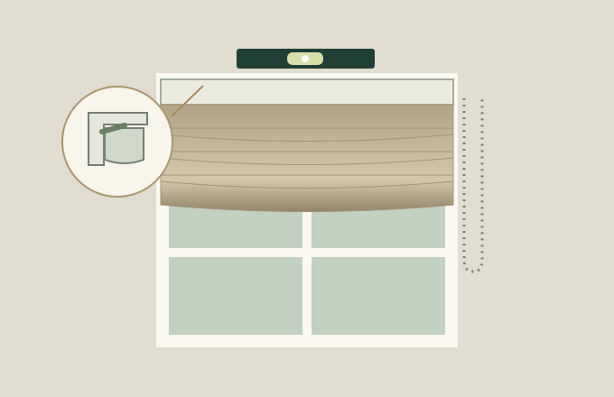

THE ROMAN BLIND COLLECTION
A quieter kind
of beautiful.
Considered fabrics. Beautiful folds.
Roman blinds made for your room.
YOUR FABRIC. YOUR FINISH.CURTAINSUK
 Texture, light and a little lift.
Texture, light and a little lift.FROM FIRST IDEA TO FINAL FOLD
Your window.
Every detail considered.
Explore the look, find your fit and bring it home.
Start wherever you are.
01 / EXPLORERoom visualiserLift the blind. Change the fabric. Find your light.
02 / MAKE IT YOURSShop nowYour measurements, your fabric, your lining.

03 / FIND YOUR FITHow to measureInside or outside recess, one step at a time.
04 / THE FINISHING TOUCHHow to installClear illustrations. A guide at every stage.THE WAY IT FALLS
Two folds.
One beautiful finish.
Choose the clean alignment of stacked folds or the gentle stepped layers of a cascade. See both move in the visualiser.
Explore the foldsA FABRIC THAT FEELS LIKE YOU
From our catalogue.
To your window.
Explore every fabric in our catalogue for your Roman blind. Finish with standard ivory or blackout lining, then see a price estimate for your measurements.
Find your fabricScreen colours are a guide. A sample helps you see the true colour and feel.
BEAUTIFULLY MADE. PERSONALLY YOURS.